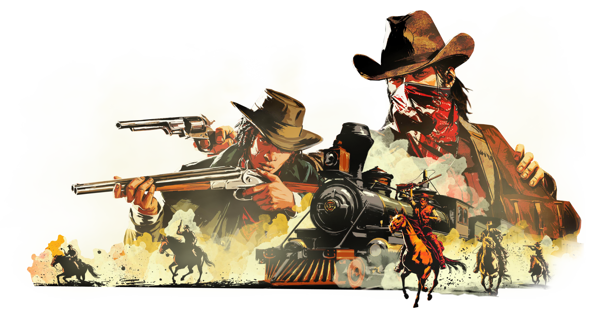

Sobre o Jogo
Red Dead Redemption 2 é um jogo de ação-aventura lançado pela Rockstar Games em 2018. Ele serve como prequel
para o jogo original Red Dead Redemption e se passa no final do século XIX, durante o declínio do Velho Oeste
nos Estados Unidos.
A história segue Arthur Morgan, um fora da lei e membro da gangue Van der Linde, liderada por Dutch van der
Linde. A gangue está fugindo das autoridades após um assalto mal sucedido em Blackwater e está em constante
busca por dinheiro e um lugar seguro para se estabelecer.
Enquanto a gangue atravessa diferentes regiões do país, enfrenta diversos desafios, incluindo a pressão das
autoridades, gangues rivais, conflitos internos e as mudanças inevitáveis na sociedade da época. A medida que
a história se desenrola, Arthur começa a questionar seus ideais e lealdades, enquanto lida com as
consequências de suas ações e busca encontrar um propósito para sua vida.
O jogo apresenta um vasto mundo aberto, com uma grande variedade de atividades disponíveis para os jogadores.
Além da narrativa principal, há missões secundárias, caça, pesca, jogos de azar e interações com diversos
personagens não jogáveis. A jogabilidade também inclui elementos de sobrevivência, como a necessidade de caçar
animais para obter comida e materiais.
A qualidade gráfica e a atenção aos detalhes são pontos fortes do jogo, proporcionando uma experiência
imersiva no Velho Oeste. A história de Red Dead Redemption 2 é aclamada por sua complexidade e profundidade,
explorando temas como honra, lealdade, redenção e o conflito entre a civilização em expansão e o estilo de
vida dos fora da lei.
No geral, Red Dead Redemption 2 é considerado um dos melhores jogos da geração, recebendo elogios tanto pela
sua narrativa envolvente quanto pela sua jogabilidade rica e vasto mundo aberto.
